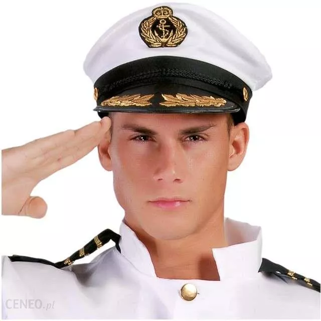

PIOSENKI
Chciałem być marynarzem
Chciałem mieć tatuaże
Podróżować zwiedzać świat
Pięknie żyć garściami życie brać
Chciałem być piosenkarzem
Chciałem mieć pełne sale
Podróżować zwiedzać świat
I wiele pięknych pięknych kobiet znać
CAŁY TEKST PIOSENKI <-- KLIK

Okręt nasz wpłynął w mgłę i fregaty dwie
Popłynęły naszym kursem by nie zgubić się.
Potem szkwał wypchnął nas poza mleczny pas
I nikt wtedy nie przypuszczał, że fregaty śmierć nam niosą.
Ciepła krew poleje się strugami,
Wygra ten, kto utrzyma ship.
W huku dział ktoś przykryje się falami,
Jak da Bóg, ocalimy bryg.
CAŁY TEKST PIOSENKI <-- KLIK